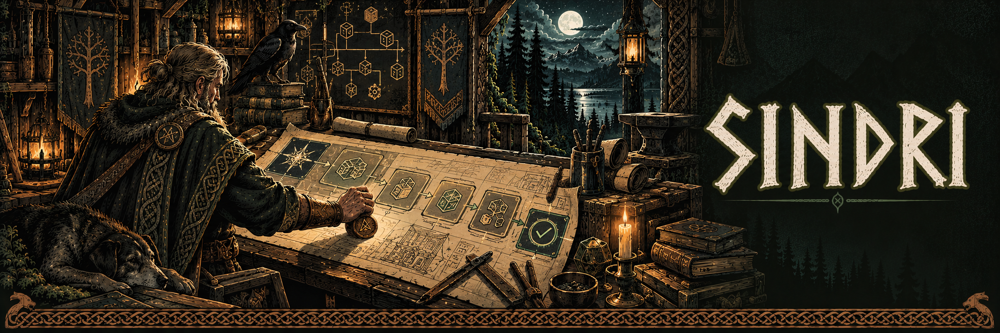

Capture the intent
Create intake from a request, then draft and revise a specification with explicit acceptance criteria.

v0.1.0 · Experimental source release
Versioned specifications, dependency plans, human approvals and evidence based delivery reviews.
Create intake from a request, then draft and revise a specification with explicit acceptance criteria.
Review tasks, dependencies, harness choices and budgets before submitting work to Mimir.
Combine deterministic verification with a separate review. Retain delivery reports and proposed changes for a human decision.
Sindri owns specifications, plans and delivery decisions. Mimir runs the agents and Brokkr defines verification. Sindri does not automatically merge or deploy the result.
Node.js 25 or newer, pnpm and Git 2.38 or newer.
Clone Sindri and run these commands from its root directory.
pnpm install --frozen-lockfile
pnpm build
node apps/cli/dist/main.js init
node apps/cli/dist/main.js doctor
node apps/cli/dist/main.js startRead the full project guide for configuration and service connections.
What we have verified
158 delivery tests passed in the October 17 audit. The October 18 real Codex counter run passed all six delivery gates and all five acceptance criteria.
Explore the tools, setup guides and release notes on each project site.